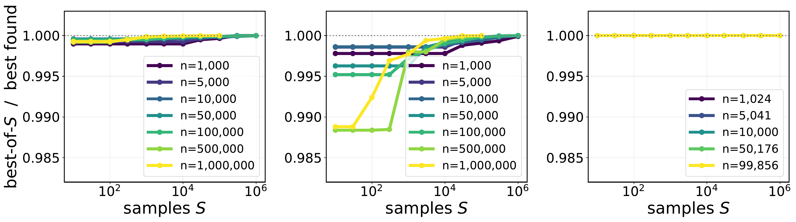
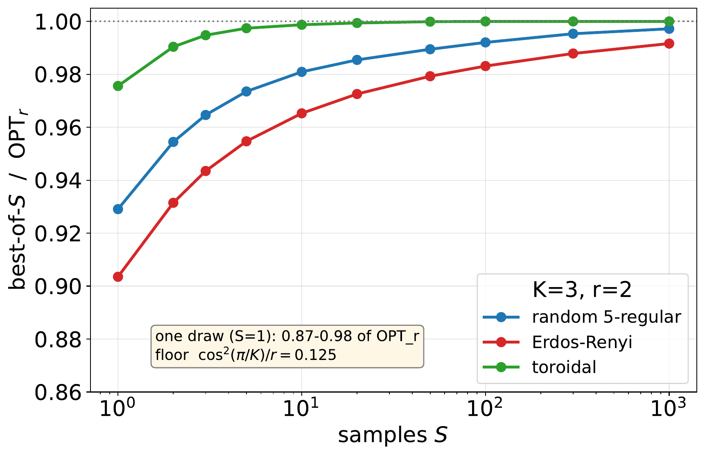

This series is about one optimization problem. Take a matrix \(\mathbf{Q} \in \mathbb{C}^{n\times n}\) (Hermitian, positive semidefinite) and maximize the quadratic form \[ \max_{\mathbf{z}\in\mathcal{A}_K^n} \mathbf{z}^\dagger \mathbf{Q} \mathbf{z}, \qquad \mathcal{A}_K = \{1, \omega, \omega^2, \dots, \omega^{K-1}\}, \omega = e^{2\pi \imath /K}, \] where every coordinate of \(\mathbf{z}\) must be one of the \(K\)-th roots of unity. For \(K=3\) this encodes Max-3-Cut: color the \(n\) vertices of a graph with 3 colors to cut as many edges as possible. In Blog 1 and Blog 2 we exploited the structural fact that when \(\mathbf{Q} = \mathbf{V}\mathbf{V}^\dagger\) has rank \(r\), the problem stops being a search over \(K^n\) colorings: the global maximizer provably lives in a candidate set of size \(O(rn^{2r-1})\), enumerable by walking the cells of a hyperplane arrangement. Exact, deterministic, embarrassingly parallel.
But polynomial is not the same as cheap. At rank \(r=2\) the candidate set is \(O(n^3)\): for a million-node graph that is \(10^{18}\) candidates — enumeration is dead on arrival, even with 15 GPUs. Meanwhile Blog 3 found something suspicious in experiments: sampling a few random candidates got within a whisker of the exhaustive optimum, and the number of samples needed did not budge as \(n\) grew.
That empirical mystery deserved a theory. This post is the theory: three theorems that explain why throwing darts works, and exactly how many darts you need.
The randomized algorithm is almost embarrassing to state. The candidate set of the exact algorithm is indexed by directions on a sphere: every unit vector \(\mathbf{c} \in \mathbb{C}^r\) gets rounded into a coloring \(\mathbf{z}(\mathbf{c})\) — coordinate \(i\) receives the root of unity nearest in phase to \(\langle \mathbf{v}_i, \mathbf{c}\rangle\) (with \(\mathbf{v}_i\) the \(i\)-th row of \(\mathbf{V}\)). So instead of enumerating all the cells of the arrangement:
The entire analysis question: how much probability mass do the good cells carry? If near-optimal cells occupy a decent fraction of the sphere, few darts suffice. If they shrink as \(n\) grows, sampling is doomed at scale. No off-the-shelf bound answers this — the cells are defined by the data. That is what the paper proves, and the answer is: the mass of the good region is controlled by quantities that do not involve \(n\) at all.
Start where the geometry is a circle. At rank 1, \(f(\varphi)\) is a staircase over \([0, 2\pi)\) (you just played with it above). The dart hits the exact optimum whenever it lands in an optimal cell. So the only question is: how wide are the optimal cells?
The paper's answer introduces a single instance parameter. At an optimal direction \(\varphi^\star\), look at how far every phasor sits from its nearest decision boundary; the rounding margin \(\eta \in (0,1]\) is that closest distance, normalized so that \(\eta = 1\) means "every phasor is dead-center in its sector." It plays exactly the role a condition number plays in numerical analysis: it is not an assumption, it is a name for the difficulty of your instance. Well-separated optimum → big margin → wide gold cells. Optimum that barely wins → thin margin → you'll need more darts.
Let \(\mathbf{Q}_1 = \mathbf{V}\mathbf{V}^\dagger\) be rank-1 PSD, and draw \(\varphi \sim \mathrm{Unif}[0, 2\pi)\). Under general position, with \(\eta\) the rounding margin of the optimum: \[ \Pr\big[ f(\varphi) = \mathrm{OPT}_1 \big] \geq \eta . \] Consequently \(S \geq \log(1/\delta)/\eta\) i.i.d. draws recover the exact rank-1 optimum with probability at least \(1 - \delta\).
(1) \(f\) is piecewise constant with \(nK\) cells — so "hit the optimum" means "land in an optimal cell." (2) A hidden symmetry multiplies your target: shifting \(\varphi\) by \(2\pi/K\) increments every coordinate's root by one — a global relabel of the colors — which leaves \(\mathbf{z}^\dagger\mathbf{Q}\mathbf{z}\) unchanged. So the optimal cell has \(K\) rotated copies, all optimal, all disjoint. (3) The margin \(\eta\) forces each copy to have width at least \(2\pi\eta/K\): the cell around \(\varphi^\star\) extends until the first phasor hits a boundary, and every phasor is at least \(\eta \pi/K\) away on each side. (4) Add up: \(K\) disjoint arcs, each of width \(\geq 2\pi\eta/K\), on a circle of circumference \(2\pi\) — total mass \(\geq \eta\).
At rank \(r \geq 2\) the dartboard is the complex unit sphere \(\mathbb{S}_{\mathbb{C}}^{r}\) (real dimension \(2r\)), the cells are patches cut by \(O(n)\) hyperplanes, and there is no hope of tracking individual cells. The paper takes a different route, and this is where the classical tools come out. The result first:
Let \(K \geq 2\), \(r \geq 2\), \(\mathbf{V}\) of full column rank. For any \(\varepsilon \in (0,1)\), a single uniform draw \(\mathbf{c} \sim \mathrm{Unif}(\mathbb{S}_{\mathbb{C}}^{r})\) satisfies \[ \Pr\Big[ f(\mathbf{c}) \geq \cos^2(\pi/K)(1-\varepsilon) \mathrm{OPT}_r \Big] \geq \varepsilon^{r-1}, \] and \(S \geq \log(1/\delta)/\varepsilon^{r-1}\) draws reach that threshold with probability \(\geq 1-\delta\).
Read the statement twice, because two things about it are remarkable. n appears nowhere — not in the success probability, not in the sample count. The graph can have a thousand nodes or a million; the dart budget is the same. And it holds unconditionally: no incoherence, no eigengap, no randomness of the instance — the probability is only over your own darts. The price is the factor \(\cos^2(\pi/K)\) (\(=1/4\) at \(K=3\)) and the exponent \(r-1\), which makes the bound sharpest at small rank — exactly the regime the whole series lives in.
The proof is a three-step pincer. It never looks at cells at all; it reduces everything to a single scalar random variable — the alignment between your dart and one special direction.
When coordinate \(i\) rounds to the nearest root of unity, the phase error is at most \(\pi/K\) (half a sector). Summing over coordinates, the rounded coloring retains a \(\cos(\pi/K)\) fraction of the "analog" signal \(N(\mathbf{c}) := \|\mathbf{V}\mathbf{c}\|_1\): \[ f(\mathbf{c}) \geq \cos^2(\pi/K) N(\mathbf{c})^2 . \] This is deterministic — true for every dart. It converts a question about the discrete \(f\) into a question about the continuous, convex \(N\).
\(N\) is a norm-like function on \(\mathbb{C}^r\); let \(M = \max_{\|\mathbf{c}\|_2 = 1} N(\mathbf{c})\) be its peak on the sphere, achieved at \(\mathbf{c}^\star\). Two classical facts sandwich everything:
Now everything hinges on the scalar \(X = |\mathbf{u}^\dagger \mathbf{c}|^2\), the squared alignment between your uniform dart \(\mathbf{c}\) and the fixed direction \(\mathbf{u} = \mathbf{a}/\|\mathbf{a}\|_2\). On the complex \(r\)-sphere this has an exact law: \[ X \sim \mathrm{Beta}(1, r-1) \qquad\Longrightarrow\qquad \Pr[X \geq 1-\varepsilon] = \varepsilon^{r-1} . \] No inequality, no hidden constant — the probability that a random direction lands in the \((1-\varepsilon)\)-alignment cap is exactly \(\varepsilon^{r-1}\). On that event, chain the three facts: \[ f(\mathbf{c}) \geq \cos^2(\pi/K) N(\mathbf{c})^2 \geq \cos^2(\pi/K)|\mathbf{a}^\dagger\mathbf{c}|^2 \geq \cos^2(\pi/K)(1-\varepsilon)M^2 \geq \cos^2(\pi/K)(1-\varepsilon)\mathrm{OPT}_r . \blacksquare \]
What it does: replaces a complicated convex function (here \(N(\mathbf{c}) = \sum_i |\langle \mathbf{v}_i, \mathbf{c}\rangle|\), a sum of \(n\) moduli) by a single linear functional that never exceeds it and is exact at the maximizer. Why you care: linear functionals of uniform sphere vectors have known laws; sums of \(n\) moduli do not. One theorem deletes the \(n\)-body problem. It is the same move that powers dual certificates in compressed sensing.
What it does: for \(\mathbf{c}\) uniform on \(\mathbb{S}_\mathbb{C}^{r}\) and any fixed unit \(\mathbf{u}\), the alignment \(|\mathbf{u}^\dagger\mathbf{c}|^2\) is exactly \(\mathrm{Beta}(1, r-1)\) — so cap probabilities are polynomials, not integrals. The subtlety worth remembering: the real sphere gives \(\mathrm{Beta}(\tfrac12, \tfrac{2r-1}{2})\) instead; working over \(\mathbb{C}\) is what makes the tail a clean \(\varepsilon^{r-1}\). The exponent \(r-1\) is the honest price of dimension: caps of fixed relative size shrink exponentially in \(r\). Small rank isn't a limitation of the analysis — it's where the geometry wants you.
Theorem 2's \(\varepsilon^{r-1}\) is exact but exponential in \(r\). Can the \(r\)-dependence be tamed? The paper's third result says yes — polynomially — if you (a) accept a threshold weakened by a factor \(1/r\), and (b) let one gentle structural parameter of the instance enter: the incoherence \(\mu\) of the eigenvectors.
Let \(K \geq 2\), \(r \geq 2\), under general position and \(\mu\)-incoherence. For any \(\varepsilon \in (0,1)\): \[ \Pr\Big[ f(\mathbf{c}) \geq \tfrac{\cos^2(\pi/K)}{r}(1-\varepsilon)\mathrm{OPT}_r \Big] \geq \frac{\varepsilon^2}{1 + V_0}, \qquad V_0 \leq \frac{c r^6 \mu^4}{\cos^8(\pi/K)}, \] so \(S \geq O\big(\log(1/\delta) \mu^4 r^6 \big/ (\varepsilon^2 \cos^8(\pi/K))\big)\) samples suffice — polynomial in \(r\), and again free of \(n\).
The engine is an inequality from 1932 that deserves more fame. Paley–Zygmund is Chebyshev's inequality run in reverse: a non-negative random variable cannot hide all of its mass below a fraction of its mean unless its variance is large relative to its squared mean: \[ \Pr\big[ f > (1-\varepsilon)\mathbb{E}f \big] \geq \frac{\varepsilon^2}{1 + \mathrm{Var}(f)/(\mathbb{E}f)^2}. \] So the whole game becomes: control the ratio \(V_0 = \mathrm{Var}(f)/(\mathbb{E}f)^2\). And here is the punchline that makes the result \(n\)-free — a cancellation:
Both the mean and the standard deviation of \(f\) grow like \(\Lambda n\) (where \(\Lambda\) is the total eigenvalue mass of \(\mathbf{Q}\)). The numerator and denominator of \(V_0\) each carry the factor \((\Lambda n)^2\) — so it cancels. What remains after the dust settles is only geometry: \(V_0 \lesssim r^6\mu^4/\cos^8(\pi/K)\). The graph's size entered the mean and the fluctuations identically, and the ratio forgot it.
The two supporting pillars, briefly. The mean is large by the paper's expectation bound — \(\mathbb{E}[f] \geq \tfrac{\cos^2(\pi/K)}{r}\mathrm{OPT}_r\) (that is where the \(1/r\) in the threshold comes from: rounding wastes a Cauchy–Schwarz factor \(r\) in expectation, which the Beta route of Theorem 2 avoids). The variance is small by a covariance count: \(\mathrm{Var}(f) \leq n^2\Lambda^2\). And to compare \(\mathbb{E}f\) with \(\mathrm{OPT}_r\) at the same scale, incoherence enters exactly once: if the top eigenvector's mass is spread over many coordinates (\(\mu\) small), rounding that eigenvector alone already certifies \(\mathrm{OPT}_r \gtrsim \cos^2(\pi/K)\Lambda n / (r^2\mu^2)\) — pinning \(\mathrm{OPT}_r\) to the \(\Lambda n\) scale so the cancellation can fire.
A one-line inequality that converts "the mean is big and the variance is controlled" into "a random draw is good with constant probability." No independence structure, no boundedness, no dimension. Whenever you can compute two moments of a complicated random objective, you already have a sampling guarantee.
The standard hypothesis of matrix completion and randomized linear algebra, in a new role: not to make sampling uniformizable, but to pin the combinatorial optimum to the analog scale \(\Lambda n\). Note the discipline: it is the only assumption, it is measurable on any instance (compute the eigenvectors, read off \(\mu\)), and its possible \(n\)-dependence is stated rather than hidden.
All three theorems analyze the same loop — draw, round, keep the best. They differ in what they promise and what they charge. This is the honest menu:
| Guarantee | Threshold reached | Per-dart success | Darts needed | Assumptions |
|---|---|---|---|---|
| Thm 1 (rank 1) | exact \(\mathrm{OPT}_1\) | \(\eta\) | \(\log(1/\delta)/\eta\) | general position |
| Thm 2 (Beta cap) | \(\cos^2(\pi/K)(1-\varepsilon)\mathrm{OPT}_r\) | \(\varepsilon^{r-1}\) (exact) | \(\log(1/\delta)/\varepsilon^{r-1}\) | none |
| Thm 3 (Paley–Zygmund) | \(\tfrac{\cos^2(\pi/K)}{r}(1-\varepsilon)\mathrm{OPT}_r\) | \(\varepsilon^2/(1+ c r^6\mu^4/\cos^8(\pi/K))\) | \(O\big(\tfrac{\log(1/\delta)\mu^4 r^6}{\varepsilon^2\cos^8(\pi/K)}\big)\) | general position + \(\mu\)-incoherence |
Small rank and high accuracy → Theorem 2 (exact exponent, clean threshold, zero assumptions). Larger rank on a spread-out instance → Theorem 3 (polynomial in \(r\)). Rank one → Theorem 1 hands you the exact optimum outright. In every row, the sample count is a function of accuracy, rank, and instance geometry — never of \(n\). The enumeration explosion \(O(n^{2r-1})\) has been traded for a fixed dart budget plus cheap per-dart linear algebra.
Theory predicts the dart budget is flat in \(n\). The paper's experiments (Max-3-Cut, \(K=3\), \(r=2\); random 5-regular, Erdős–Rényi, and toroidal graphs) sweep \(n\) from \(10^3\) to \(10^6\) and \(S\) up to \(10^6\):


One more empirical footnote the theory made possible: the analyzed sampler (uniform on the sphere) was tested head-to-head against the sampler our earlier deployed code used (null vectors of random row subsets — see Blog 3). Same cut quality to within 0.15% up to \(n = 10^6\) — but the null-vector draw rejects roughly 40% of its samples as degenerate, while the uniform-sphere draw rejects none. The version that is easier to analyze turned out to be the version that is cheaper to run. Theory and engineering agreeing on the same design is a good sign you've found the right abstraction.
If you remember four things from this post, make them the four tools — they are older than this problem and will outlive it:
The deeper lesson of the series so far: structure pays twice. Low rank first turned an exponential search into a polynomial enumeration (Blogs 1–2); now the same structure makes blind random sampling provably sufficient — with a dart budget that never heard of \(n\).